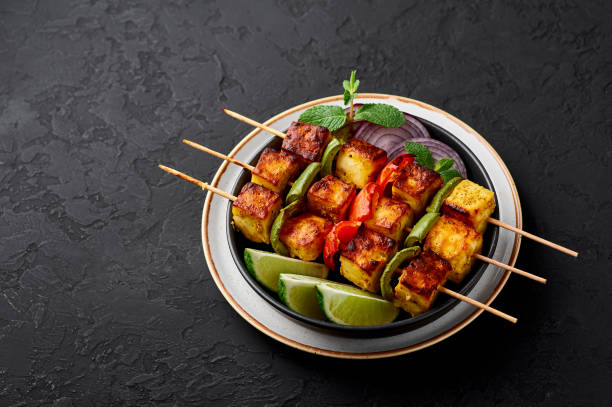
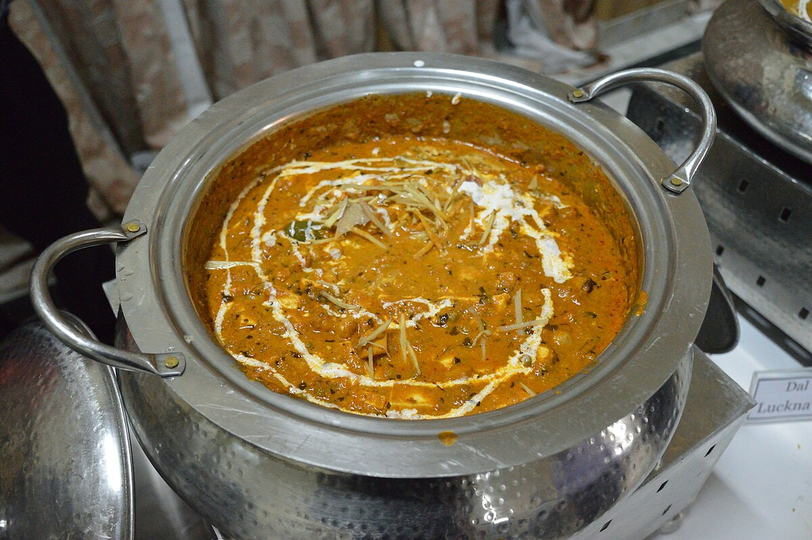
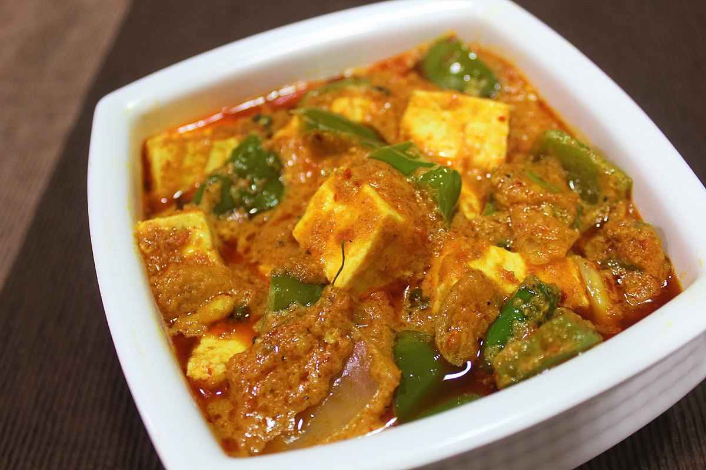
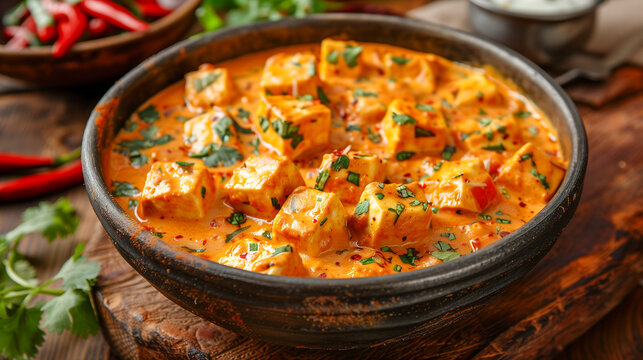
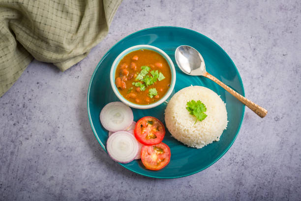

Home
About
Tags
Recipes
Contact
Simple Kitchen
No fluff, Just Recipes
Recipes
Paneer Dishes (12)
Dal & Curries (8)
Rice & Biryani (6)
Snacks & Appetizers (15)
Palak Paneer
Prep : 20min | Cook : 25min
Paneer Butter Masala
Prep : 15min | Cook : 30min
Chole Bhature
Prep : 30min | Cook : 45min

Paneer Tikka
Prep : 30min | Cook : 15min

Paneer Makhani
Prep : 15min | Cook : 25min

Kadai Paneer
Prep : 15min | Cook : 20min

Shahi Paneer
Prep : 25min | Cook : 30min

Rajma Chawal
Prep : 15min | Cook : 40min
Aloo Gobi
Prep : 10min | Cook : 20min
Masala Dosa
Prep : 25min | Cook : 15min
Dal Tadka
Prep : 10min | Cook : 30min